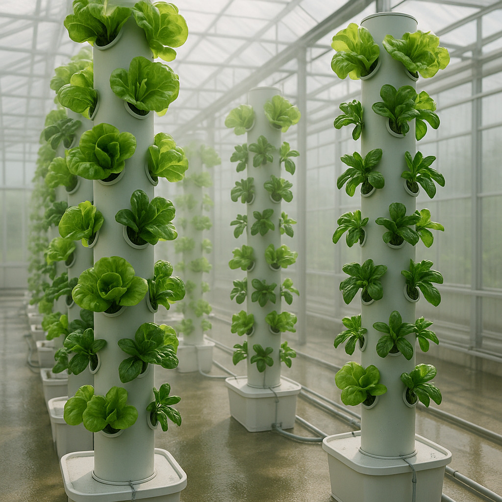
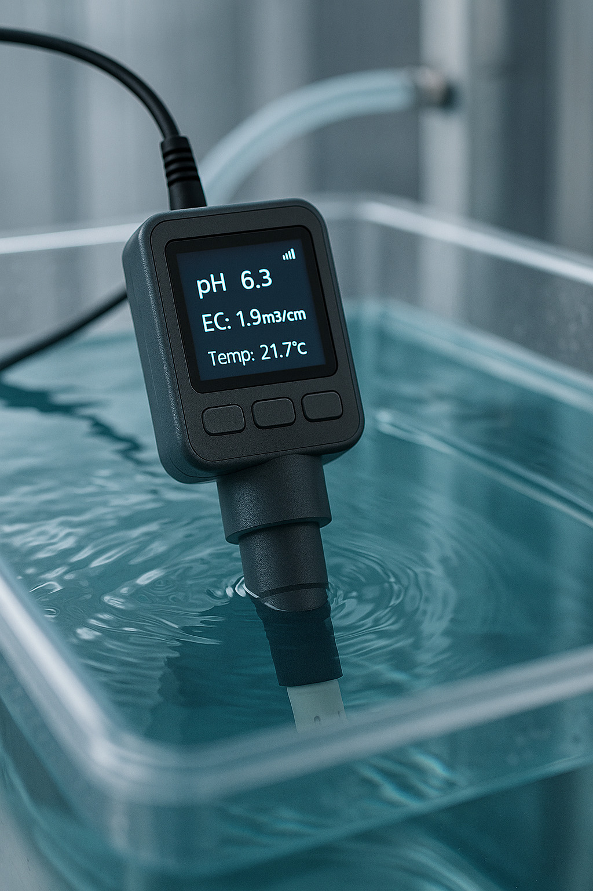
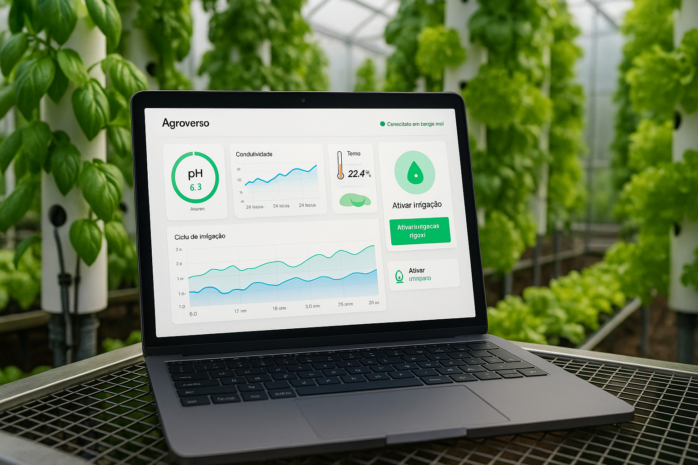

Hidroponia Inteligente
Cultivo de precisão com sensores, automação regenerativa e controle digital



Sobre o sistema
A Hidroponia Inteligente Agroverso combina sensores de pH, condutividade elétrica e temperatura da água com um sistema modular e verticalizado. O controle pode ser feito via aplicativo móvel ou painel web, otimizando o cultivo com mínima intervenção humana e máxima performance produtiva.
Benefícios principais
- 💧 Redução de até 90% no uso de água em comparação ao cultivo tradicional
- 📊 Monitoramento em tempo real de pH, EC e temperatura da solução nutritiva
- 🧠 Automação inteligente das dosagens e correções de nutrientes
- 🏙️ Adaptação perfeita a ambientes urbanos: estufas, containers e telhados
- 📱 Interface amigável com dashboard acessível via app ou browser
Aplicações recomendadas
Recomendado para hortas comerciais, agricultura urbana, programas escolares de nutrição, produção intensiva em containers e projetos de soberania alimentar regenerativa em qualquer escala.